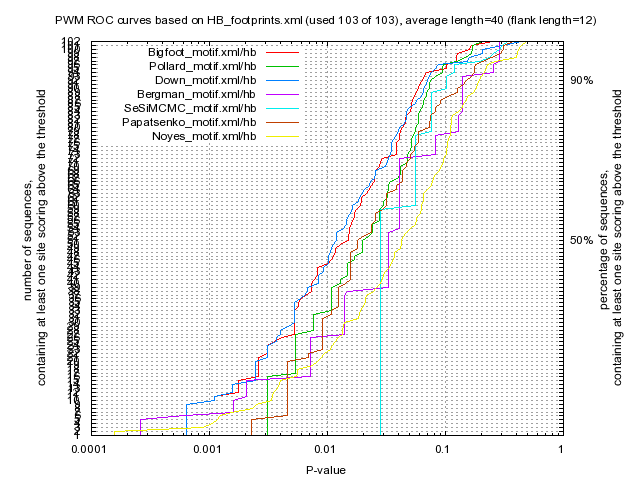

Kulakovskiy I.V., Favorov A.F., Makeev V.J. (2009) Motif discovery and motif finding from genome-mapped DNase footprint data. Bioinformatics 25(18): 2318-2325.
<up> DMMPMM motif HB comparison [dmmpmm_compare_html]
|  |
motif alignment
motif similarity
|
Bigfoot |
Pollard |
Down |
Bergman |
SeSiMCMC |
Papatsenko |
Noyes |
| Bigfoot |
1.0 |
0.7145 |
0.6371 |
0.4206 |
0.5141 |
0.4825 |
0.356 |
| Pollard |
0.7145 |
1.0 |
0.6315 |
0.349 |
0.5751 |
0.4471 |
0.355 |
| Down |
0.6371 |
0.6315 |
1.0 |
0.4171 |
0.5216 |
0.4879 |
0.3644 |
| Bergman |
0.4206 |
0.349 |
0.4171 |
1.0 |
0.3031 |
0.3648 |
0.3035 |
| SeSiMCMC |
0.5141 |
0.5751 |
0.5216 |
0.3031 |
1.0 |
0.4038 |
0.2989 |
| Papatsenko |
0.4825 |
0.4471 |
0.4879 |
0.3648 |
0.4038 |
1.0 |
0.3168 |
| Noyes |
0.356 |
0.355 |
0.3644 |
0.3035 |
0.2989 |
0.3168 |
1.0 |
|